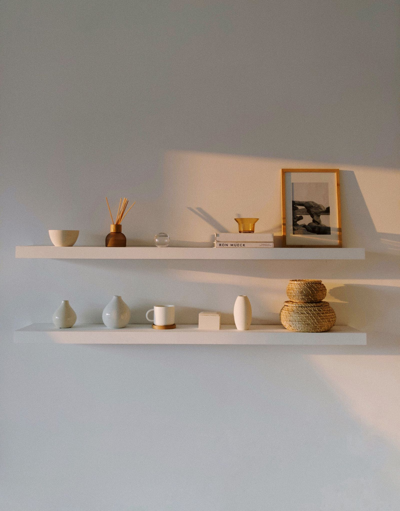
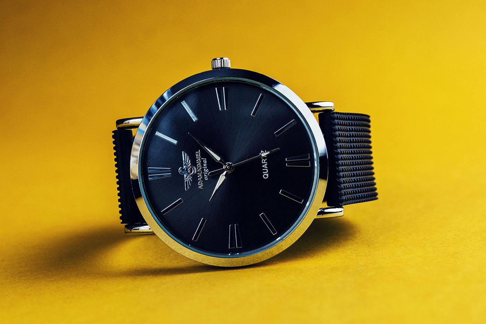

Viktoria
Home
About
Services
Portfolio
Inquire
Selected work
Portfolio
A glimpse of the worlds we build for ambitious founders.
Maison Noir — Feed direction

Atelier Lune — Launch campaign
Celine Hart — Personal brand

The Edit — Product storytelling